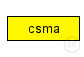
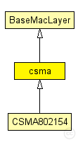

This documentation is released under the Creative Commons license
This documentation is released under the Creative Commons licenseGeneric CSMA protocol supporting Mac-ACKs as well as constant, linear or exponential backoff times.
The following diagram shows usage relationships between types. Unresolved types are missing from the diagram. Click here to see the full picture.
The following diagram shows inheritance relationships for this type. Unresolved types are missing from the diagram. Click here to see the full picture.
| Name | Type | Description |
|---|---|---|
| BaseMacLayer | simple module |
Base module for every mac layer module |
| Name | Type | Description |
|---|---|---|
| CSMA802154 | simple module |
IEEE 802.15.4-2006 non-beacon enabled CSMA protocol This model was independently validated on a wireless sensor network testbed. For more information, see Accurate Timeliness Simulations for Real-Time Wireless Sensor Networks, J. Rousselot, J.-D. Decotignie, M. Aoun, P. van der Stok, R. Serna Oliver, G. Fohler. In Proceedings of the 2009 Third UKSim European Symposium on Computer Modeling and Simulation. |
| Name | Type | Default value | Description |
|---|---|---|---|
| notAffectedByHostState | bool | false | |
| coreDebug | bool | false |
debug switch |
| headerLength | int | 72 bit |
length of the MAC packet header (in bits) |
| address | string | "auto" |
MAC address as hex string (12 hex digits), or "auto". "auto" values will be replaced by a generated MAC address in init stage 1. |
| debug | bool | false |
debug switch |
| stats | bool | true | |
| trace | bool | false | |
| queueLength | int | 100 |
size of the MAC queue (maximum number of packets in Tx buffer) |
| bitrate | double | 250000 bps |
bit rate |
| ccaDetectionTime | double | 0.000128 s |
Clear Channel Assessment detection time |
| rxSetupTime | double |
Time to setup radio to reception state |
|
| aTurnaroundTime | double | 0.000192 s |
Time to switch radio from Rx to Tx state |
| txPower | double |
tx power [mW] |
|
| useMACAcks | bool |
Send/Expect MAC acks for unicast traffic? |
|
| macMaxFrameRetries | int | 3 |
Maximum number of frame retransmission, only used when usage of MAC acks is enabled. |
| macAckWaitDuration | double | 0.00056 s |
Time to wait for an acknowledgement after transmitting a unicast frame. Only used when usage of MAC acks is enabled. Value is calculated from 1+12+10+12 symbols, which is defined for nonbeacon-enabled PAN. In the non-beacon-enabled case, the receiver responds at aTurnaroundTime (i.e. the time for the sender and receiver to both be guaranteed to have switched from Tx to Rx and vice verse). This gives the value 192us + 352us = 544us (there's been some discussion about the "extra" 1 symbol == 16us) [section 7.5.6.4.2 of the specification]. |
| ackLength | double | 40 bit |
Complete MAC ack message length (in bits) (! headerLength is not added to this), only used when usage of MAC acks is enabled. |
| sifs | double | 0.000192 s |
Simple interframe space (12 symbols). Time to wait between receiving a frame and acknowledging it. Should be bigger than the maximum time for switching between Tx and Rx at the receiver. Only used when usage of MAC acks is enabled. |
| backoffMethod | string | "linear" |
Backoff method to use: constant, linear or exponential |
| macMaxCSMABackoffs | int | 5 |
maximum backoffs |
| aUnitBackoffPeriod | double | 0.00032 s |
base unit for all backoff calculations |
| contentionWindow | int | 2 |
# of backoff periods of the initial contention window (for linear and constant backoff method only) |
| macMinBE | double | 3 |
minimum backoff exponent (for exponential backoff method only) |
| macMaxBE | double | 8 |
maximum backoff exponent (for exponential backoff method only) |
| Name | Value | Description |
|---|---|---|
| class | csma |
| Name | Direction | Size | Description |
|---|---|---|---|
| upperLayerIn | input |
from upper layer |
|
| upperLayerOut | output |
to uppe layer |
|
| upperControlIn | input |
control from upper layer |
|
| upperControlOut | output |
control to upper layer |
|
| lowerLayerIn | input |
from lower layer |
|
| lowerLayerOut | output |
to lower layer |
|
| lowerControlIn | input |
control from lower layer |
|
| lowerControlOut | output |
control to lower layer |
// // Generic CSMA protocol supporting Mac-ACKs as well as // constant, linear or exponential backoff times. // simple csma extends BaseMacLayer { parameters: @class(csma); // debug switch bool debug = default(false); bool stats = default(true); bool trace = default(false); // length of MAC header headerLength @unit(bit) = default(72 bit); // size of the MAC queue (maximum number of packets in Tx buffer) int queueLength = default(100); // bit rate double bitrate @unit(bps) = default(250000 bps); // Clear Channel Assessment detection time double ccaDetectionTime @unit(s) = default(0.000128 s); // 8 symbols // Time to setup radio to reception state double rxSetupTime @unit(s); // Time to switch radio from Rx to Tx state double aTurnaroundTime @unit(s) = default(0.000192 s); // 12 symbols //tx power [mW] double txPower @unit(mW); // Send/Expect MAC acks for unicast traffic? bool useMACAcks; // Maximum number of frame retransmission, // only used when usage of MAC acks is enabled. int macMaxFrameRetries = default(3); // Time to wait for an acknowledgement after transmitting a unicast frame. // Only used when usage of MAC acks is enabled. // Value is calculated from 1+12+10+12 symbols, which is defined for nonbeacon-enabled PAN. // In the non-beacon-enabled case, the receiver responds at aTurnaroundTime // (i.e. the time for the sender and receiver to both be guaranteed to have // switched from Tx to Rx and vice verse). This gives the value 192us + // 352us = 544us (there's been some discussion about the "extra" 1 symbol == 16us) // [section 7.5.6.4.2 of the specification]. double macAckWaitDuration @unit(s) = default(0.00056 s); // Complete MAC ack message length (in bits) // (! headerLength is not added to this), // only used when usage of MAC acks is enabled. double ackLength @unit(bit) = default(40 bit); // Simple interframe space (12 symbols). Time to wait between receiving a frame and acknowledging it. // Should be bigger than the maximum time for switching between Tx and Rx at the receiver. // Only used when usage of MAC acks is enabled. double sifs @unit(s) = default(0.000192 s); //Backoff method to use: constant, linear or exponential string backoffMethod = default("linear"); // maximum backoffs int macMaxCSMABackoffs = default(5); // base unit for all backoff calculations double aUnitBackoffPeriod @unit(s) = default(0.00032 s); // # of backoff periods of the initial contention window // (for linear and constant backoff method only) int contentionWindow = default(2); // minimum backoff exponent (for exponential backoff method only) double macMinBE = default(3); // maximum backoff exponent (for exponential backoff method only) double macMaxBE = default(8); }
This documentation is released under the Creative Commons license